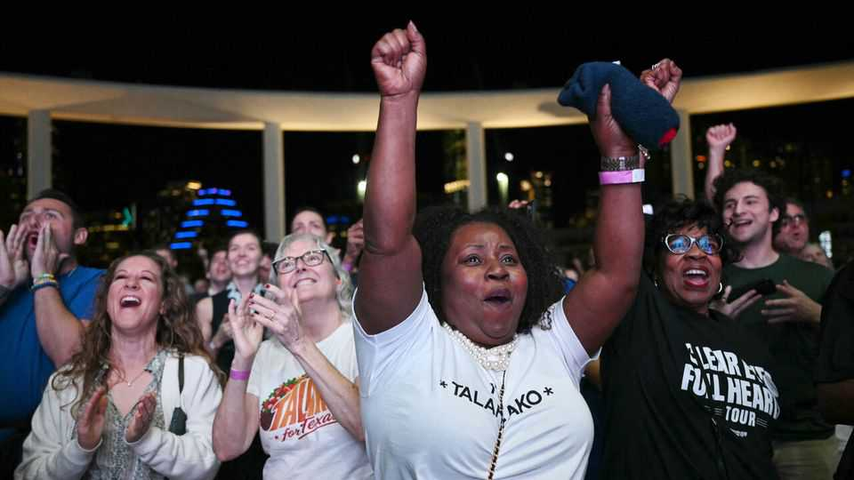
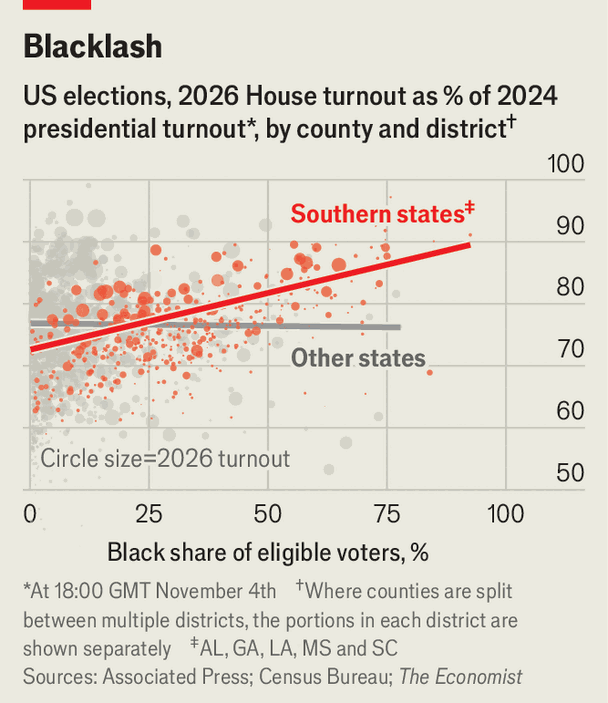
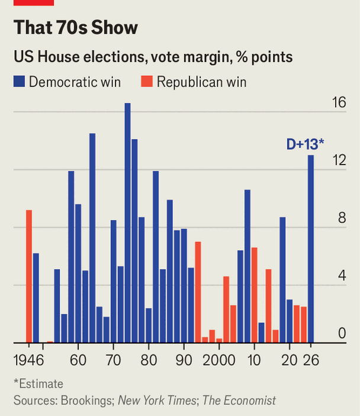
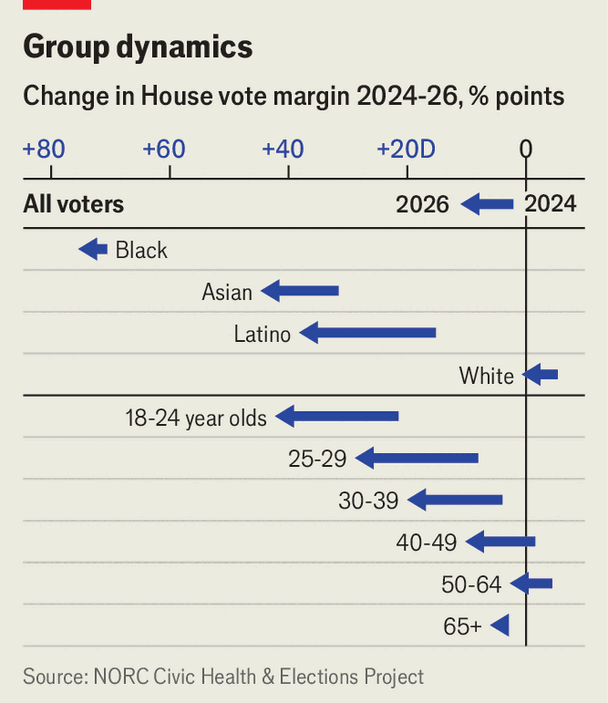
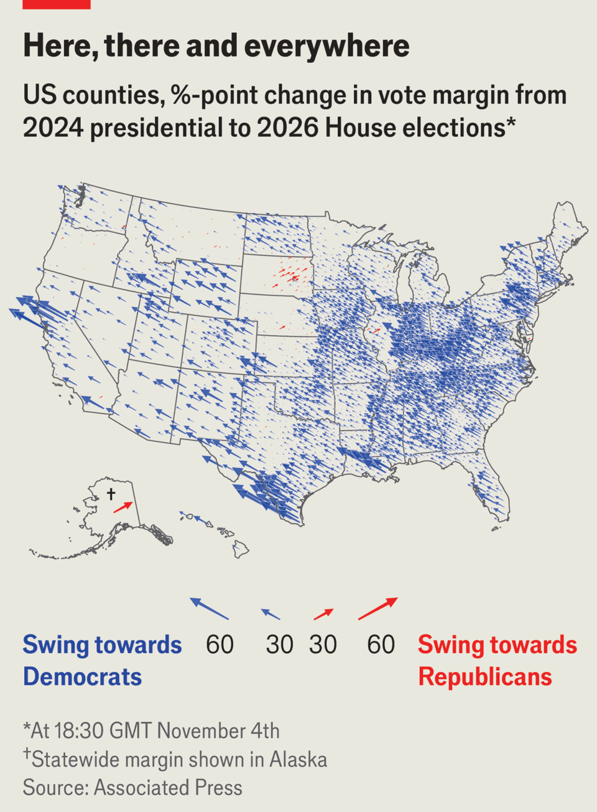

The Democrats have won the biggest congressional landslide in 50 years
Black, Hispanic and young voters helped power the party’s victory

Nov 5th 2026
GEORGE W. BUSH described his party’s midterm loss in 2006 as a “thumping”; Barack Obama called his setback four years later a “shellacking”. There may not be a sufficient superlative in the English language for the magnitude of the midterm defeat that Republicans suffered on November 3rd, but Donald Trump might call it “yuge”.

When The Economist went to press on November 5th, Democrats were expected to win the national popular vote for the House of Representatives by 13 percentage points, the largest congressional margin of victory for either party since 1976, in the wake of the Watergate scandal. They are on track to win around 260 of the 435 seats in the lower chamber, more than they obtained amid the financial crisis of 2008. The party has secured at least a 54-46 majority in the Senate, including victories in five states that Mr Trump won by double digits in 2024. Betting markets are nearly certain that it will win the two remaining uncalled races in Alaska and, shockingly, Mississippi, which backed Mr Trump by 23 points two years ago.
In state contests, Democrats comfortably unseated Republican governors in Georgia, Iowa, Nevada, Ohio and Texas, and are expected to claim another in Alaska. By winning state legislatures, too, they gained unified control of government in Michigan, Minnesota, Nevada, Pennsylvania and Wisconsin, and are likely to do so in Arizona as well.

A wave this big washes up everywhere. In 343 of the 346 contested House districts with at least 80% of votes counted, Democrats won a higher share of the vote than they had in the 2024 presidential election. But the trend was most pronounced in the South, a repudiation of the notion that the region is particularly unresponsive to national trends, due to its high concentration of loyal Democratic black voters and loyal Republican white Evangelicals. Compared with 2024, Democrats gained two more points of margin in the region, on average, than the party did outside it. It was only the jaw-dropping Senate upsets in South Carolina and probably Mississippi that rendered the otherwise stunning wins elsewhere in the South look more ordinary: Democrats won North Carolina’s Senate race by 20 points and Georgia’s by 18, and came within two points of winning Louisiana’s. The party is likely to flip five or six House seats in North Carolina that had not been considered competitive.
The region’s Republican state legislators may well bear some responsibility for their party’s woes. After the Supreme Court earlier this year weakened an important provision of the Voting Rights Act, in Louisiana v Callais, lawmakers in Alabama, Louisiana and Tennessee redrew their House maps to eliminate majority-black districts. That seems to have sparked a backlash. Turnout in a midterms election is always lower than in a presidential one. In Deep South states, however, the decline in turnout was smallest in counties where most voters are black, and largest in those with the fewest black residents. Outside this region, where the Supreme Court’s ruling did not prompt further redistricting, there was no such disparity.

Across the country, pre-election polls detected a “last in, first out” pattern to Republican support: the Hispanic, Asian and younger voters who had moved right from 2020 to 2024 said that they planned to abandon Republicans in 2026 in even greater numbers. District-level results and exit polls both show they kept their word. Democratic gains were largest in areas with big shares of residents who were foreign-born or of Mexican descent, and comparatively small in those with lots of older voters. Although Hispanic and Asian voters were much more likely to list prices or the economy as their most important issue, rather than immigration, it is little surprise that the party waging a sweeping deportation campaign suffered an unusually harsh electoral rebuke in the places where most immigrants live.
The scale of Democrats’ victory in the popular vote, along with the concentration of their gains in Republican-voting areas, also disproves the conventional wisdom that entrenched partisan polarisation gives modern parties a relatively high floor of support. Neither Barack Obama nor Bill Clinton, two popular Democratic presidents, ever won the White House or had their party win the House by such a big margin. According to the NORC Civic Health & Elections Project (CHEP), a large pre-election survey, Democrats managed to peel off a healthy slice of erstwhile Republican backers: 6.5% of respondents who said they voted for Mr Trump in 2024 supported a Democrat for the House this year, compared with just 2.8% of those who said they plumped for Kamala Harris in 2024 and opted for a Republican House candidate this time.

Democrats also enjoyed a strong advantage in turnout. In chep’s data just 7.6% of former Harris voters stayed home or supported third parties, compared with 12.2% of Mr Trump’s. And despite the overall decline in voter numbers from a presidential election to a midterm, fully 14% of this year’s electorate did not vote in 2024. CHEP estimates that Democrats won these new entrants by 22 points.
With victory of an almost unimaginable scale in hand, Democrats are already licking their chops in anticipation of the 2028 election cycle. If they secure the expected 56 seats in the Senate, where terms last for six years, they will be clear favourites to hold the upper chamber regardless of which party wins the presidency. If Democrats can manage a second consecutive wave election two years from now, as they did in 2006 and 2008, they could plausibly hope for a 60-vote supermajority that would enable them to pass legislation without Republican support.■
Stay on top of American politics with The US in brief, our daily newsletter with fast analysis of the most important political news, and Checks and Balance, a weekly note that examines the state of American democracy and the issues that matter to voters.